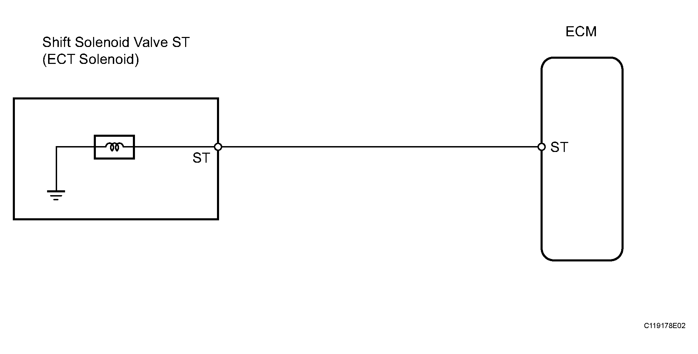

DTC P0787 Shift / Timing Solenoid Low (Shift Solenoid Valve ST); DTC P0788 Shift / Timing Solenoid High (Shift Solenoid Valve ST): Wiring Diagram
WARNING:
This page is about a different variant/trim than selected.
Fig 1: Shift Solenoid Valve ST - Wiring Diagram

Courtesy of © TOYOTA, LICENSE AGREEMENT TMS1002